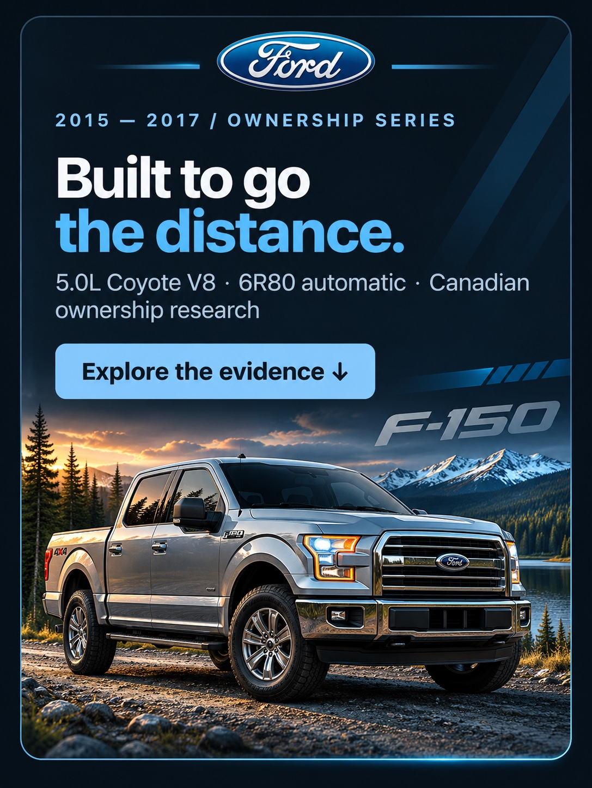

div, :scope > svg').forEach(e=>e.style.display='none');this.closest('section').style.padding='0';this.closest('section').style.background='none';this.closest('section').style.border='0'">2015 — 2017 / OWNERSHIP SERIES
Built to go
the distance.
5.0L Coyote V8 · 6R80 automatic · Canadian ownership research
Explore the evidence ↓01 / Evidence
Reliability dashboard
Convenience sample, not a failure-rate study. Some engines unverified; one independent inspection included.
Unique vehicles per component
Observed repair mileage
Dots = known mileage; segments = bounded mileage.
02 / Database
Vehicle histories
03 / Workshop
Mechanical component guide
Component identification and photo-reference links; verify exact fitment.
04 / Service
Maintenance through 300,000 km
Conservative owner plan, not Ford's official schedule. Follow the VIN-specific manual and severe-duty requirements.
05 / Canadian dollars
Repair cost calculator
Select potential repairs. Estimates before tax, not quotations.
Ownership reserve
06 / Safety
Recalls and technical bulletins
Check your VIN with Ford Canada07 / Technical reference
Specifications, fluids & replacement parts
Reference values require confirmation against the exact model year, axle, equipment and VIN. Never fill a transmission using dry capacity alone.
08 / Diagnostics
Symptoms and troubleshooting
09 / Library
Downloadable resources
Research data
Repair events CSVVehicle histories
Research findings
Ownership documents
Maintenance guideKnown issues
Repair costs
Blank maintenance log